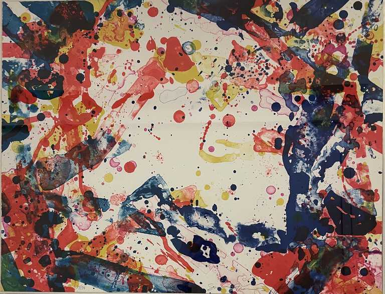
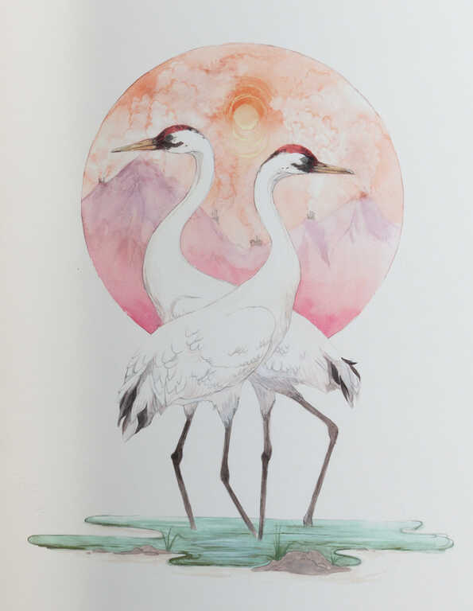
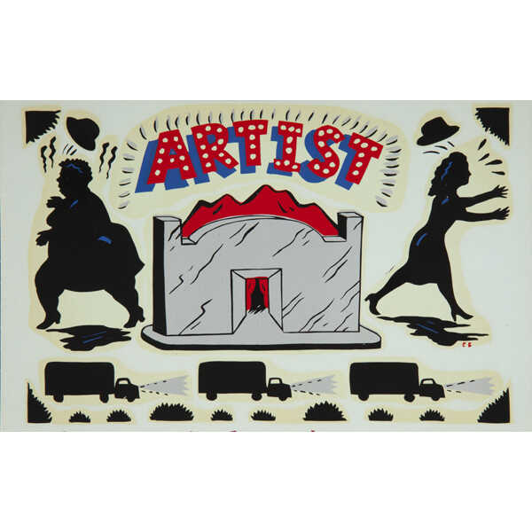
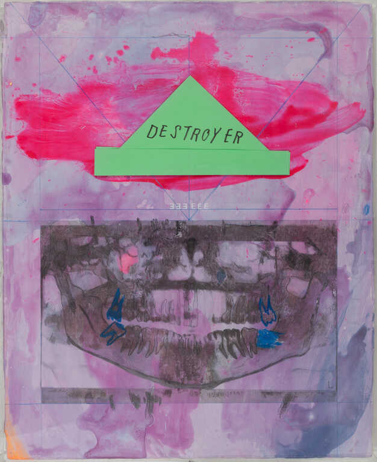
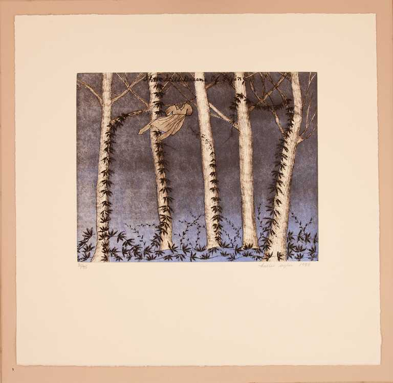
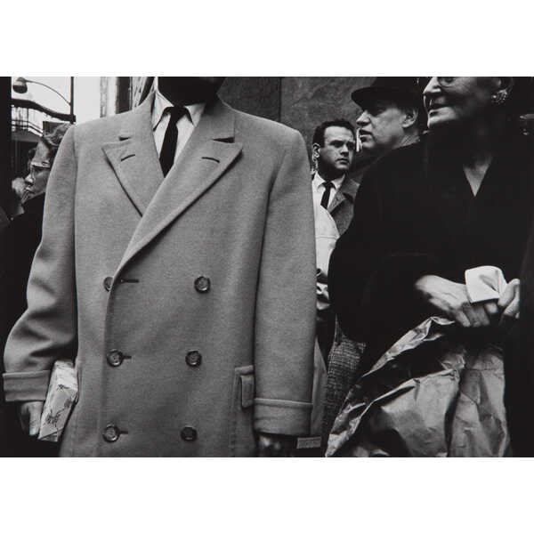

To get started, swipe or click on the icons to "like" and "dislike" each artwork you see. At the end, you'll be matched with one of our curated results!
Are you sure you want to skip the quiz?
You've already started on your path to discovering your unique artistic preferences and style!

Paper Weight (SF 109; Lembark no. L118)
By: Sam Francis

Whooping Crane
By: Jenny Kendler

False Image Decal (Artist)
By: Roger Brown

destroyer
By: Erin Washington

She Still Dreams of Flying
By: Hollis Sigler

Untitled
By: Yasuhiro Ishimoto
A Community of Non-Citizens: Proving Worth of Citizenship through Stitching Samplers (A Work in Progress)